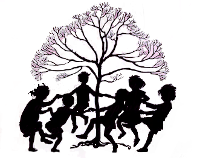

Ring around the rosie, has swept the world to be one of the most well known nursery rhymes of the age. Scripted in the year 1881 in England, kids around the world gather in a circle by holding hands, and sing while moving in a circle:
Ring-a-ring o’ roses
Pocket full of posies
A-tissue, A-tissue
We all fall down
Alongside this more common version of the nursery rhyme, there are multiple variations, all conveying slightly different meanings. One variation of the nursery rhyme shown above includes:
Ring-a-ring o’ roses
Pocket full of posies
Ashes! Ashes!
We all fall down
This nursery rhyme has been perceived by most people to be a fun and playful tune. The children partaking in this rhyme enjoy it, ending it in a fall. At first listen, this rhyme for children seems to have a quite simple and straightforward meaning. ‘Ring-a-ring o’ roses’, means a ring of roses. ‘Pocket full of poses’, represents a bunch of poses which are just flowers. ‘A-tissue, A-tissue, We all fall down’ interprets to the reader that they are about to sneeze, and have fallen over. While this rhyme does have a playful ring and everybody enjoys it, there lies a hidden, dark meaning, masked by its jovial exterior.
Ring-a-ring-a-rosie nursery Rhyme |
|